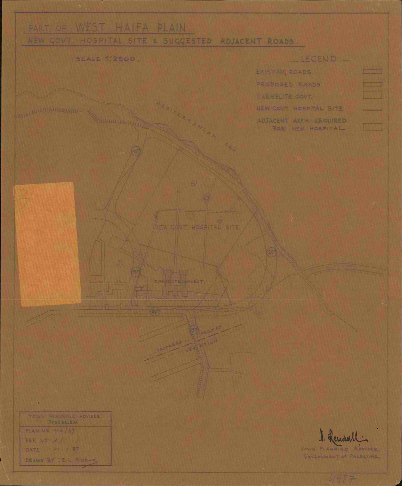
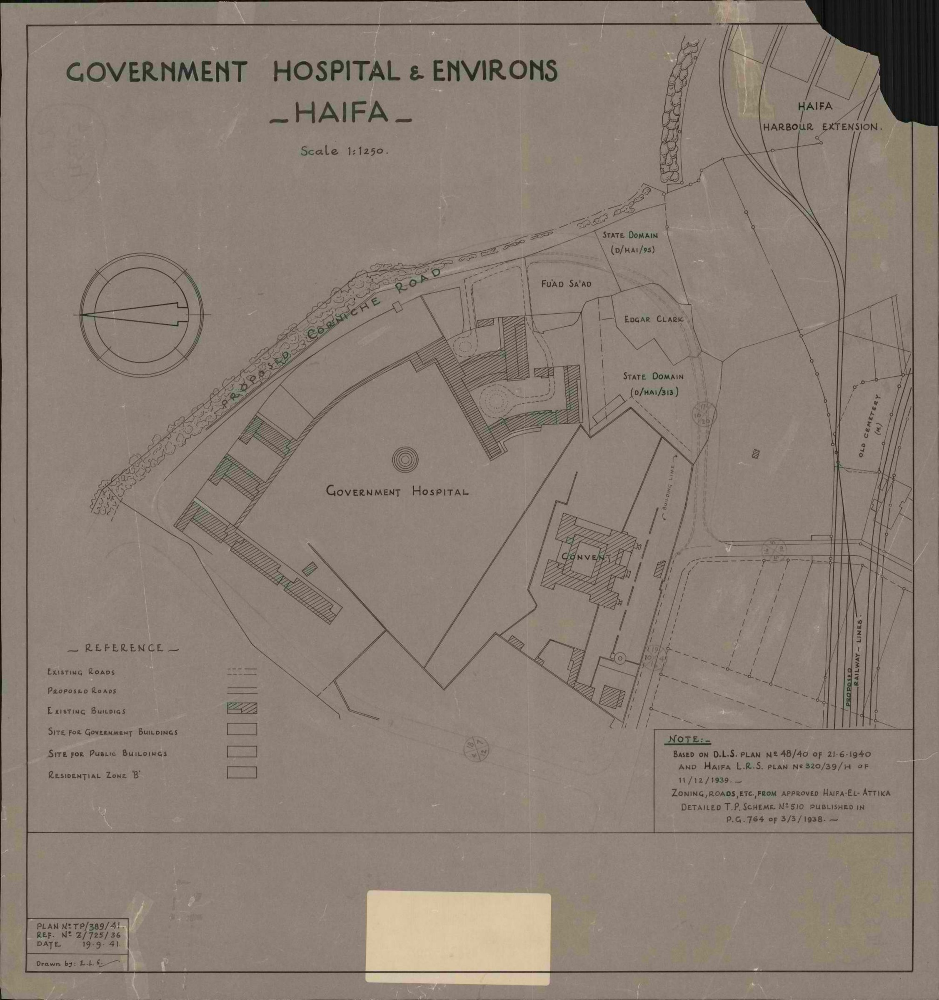

Premises, 1918–1948
One table, with every row sourced. The register spans two plants: the leased premises on Mountain Road (Arabic Tariq al-Jabal, Hebrew רחוב ההר, today's Sderot ha-Ziyonut) until October 1938, and the purpose-built hospital at Bat Galim after. The argument for the dating is in History §07; the earlier premises are in §04–05.
| date | event | source |
|---|---|---|
| Sep 1918 – Jan 1922 | A government hospital in requisitioned German premises (the Borromäerinnen's hospital), released January 1922 | History §02 (Warte des Tempels, 15 Apr 1926) |
| 1922 – 1930 | Unevidenced. The 1928–29 Jerusalem and the East Mission (J&EM) report already calls the Government Hospital "recently established"; where it stood is not documented. | History §04 |
| 1930 | "30 beds for general cases", serving mostly officials, railway staff, police, prisoners and accident cases | |
| 1932 – early 1933 | Public Works Department (PWD) "alterations and repairs to St. Luke's Hospital, Haifa"; "the expansion of Haifa Hospital by 50 beds in the St. Luke's building was accomplished early in 1933" | |
| 1934 – 35 | A separate Government Isolation Hospital on Mountain Street, between Khury and Catoni Streets | |
| Sep / Oct 1935 | The founding memorandum: "the present leased premises of St. Luke's Mission Hospital must be vacated by the end of December, 1938"; 130 beds, 40 of them fever; a 20-bed temporary hut approved | |
| Jul – Sep 1935 | "Q. Laz." written as a ward on four rows (§06) | register NB12 pp. 76–116 |
| 1935 · 1936 | "A pavilion ward, providing an additional 20 beds" (1935); "a new pavilion with 22 beds was installed at Haifa Hospital" (1936) | |
| Jun 1937 – 17 Sep 1938 | "Hut" written as a ward (§06) | register NB16–NB20 |
| Jun 1937 | Contract with Solel Boneh; work begins at Bat Galim with some 80 Jewish and Arab workers | |
| Jan 1938 | The block "stands sheer, complete in architectural severity"; the High Commissioner inspects it on 5 January | |
| Sep 1938 | Construction completed (the architect's office); "occupation of the Hospital buildings started in the second half of September" | |
| 28 Sep – 11 Oct 1938 | The clerks' "Gen." gives way to "Med.": the first "Med." on 28 September, the last "Gen." on 11 October (§04) | register NB20 pp. 72–80 |
| 3 Oct 1938 | Main blocks and Pavilions A, B, C, D formally taken over from the contractor | |
| 31 Oct 1938 | The register's seam. Notebook 20 ends and notebook 21 begins on the same day, the serial running on at 2686 (scans in §09) | register NB20 p. 99 · NB21 p. 1 |
| 8 Nov 1938 | "Some 150 patients transferred from the former hospital wards on Mountain Road are already housed in the new premises" | |
| 18 Nov 1938 | Working: equipment "transferred from the old hospital"; "230 beds, among them 90 for infectious diseases" | |
| 21 – 22 Dec 1938 | Pavilions E and F taken over (21 Dec); the ceremonial opening by the High Commissioner (21 or 22 Dec, the sources differ) | |
| 1939 | The old building still stands, as a casualty post: "the new and old Government Hospital" | |
| 6 Mar 1940 | Pavilions E and F still being snagged: missing plugs, a cracked wash basin, serving hatches warped by the rains | |
| Aug 1940 | After an air raid, congestion at the casualty entrance; a second emergency approach asked for | |
| 18 Mar 1941 | Schedule of record drawings: six storeys, Pavilions A–F, Block 9; the key plan E/R 286 listed | |
| Dec 1941 – Apr 1942 | The Plague Unit, about £P.2,700, built against "the adjacent existing verandah" (drawing B/1641) | |
| 1942 – 45 | "A special department for plague sufferers beside the Government Hospital" (1942); "a pavilion of 20 beds was added" during the war | |
| 14 Aug 1944 | Plague cases begin to go to pavilion E (§05) | register |
| 31 Dec 1947 | Jewish patients moved out; Jewish staff walk out | History §09 |
| 2 May 1948 | Transferred to Haifa municipality, 288 beds |


Bed strength, and the register's census
The sources give at least five different kinds of bed figure, and they are not interchangeable: an announcement, a design, a nominal establishment (the Blue Book's and the Department of Health's “nominal bed strength”), a count reported on a particular day, and the official daily average of beds occupied. The register gives a sixth: a nightly count of the patients in the house, reconstructed from admission and discharge dates.
Register
The house fills steadily. Patients in on an average night rise from about 30 in 1930 to about 135 in 1938 and 155 in 1939, then to 189, 184 and 194 in August–October 1944 (maximum 209) and 216 and 207 in May–June 1946. The highest night in the record is 3 June 1946, with 239 patients. That is more than any establishment figure before 1944.
| year | official daily average | register census, mean | days counted | register ÷ official | source |
|---|---|---|---|---|---|
| 1936 | 117.4 | 107.4 | 286 | 91% | |
| 1938 | 133.5 | 134.4 | 365 | 101% | |
| 1940 | 171.0 | 157.9 | 61 | 92% | |
| 1941 | 176.5 | — | 0 | — | |
| 1944 | 210.8 | 179.8 | 137 | 85% |
The census and the official average are measured independently, yet they track each other within about 15 per cent. In 1938 the census matches the official average almost exactly. Below it in the other years is what a floor should do. That the two agree so closely is the best check available that the admission and discharge dates in the data are sound.
Other sources: every figure, by kind
| date | beds | kind | what the source says | source |
|---|---|---|---|---|
| 1930-06 | 30 | reported | “30 beds for general cases” | |
| 1933-03-01 | + | works | +50 beds in the St. Luke's building, “early in 1933” | |
| 1935-09-01 | 130 | reported | 130, of which 40 fever and isolation | |
| 1935-09-01 | 150 | approved | to 150 by “a temporary hut designed to accommodate 20 cases” | |
| 1935-09-12 | 260 | announced | 180 surgical + 80 other, “will take two years” | |
| 1935-10-01 | 277 | designed | 189 general + 88 fever, “the total bedstrength of the whole Hospital” | |
| 1936-01-02 | 208 | designed (our sum) | beds named room by room in the Schedule of Accommodation; it states no total | |
| 1936-06 | 171 | establishment | General 74 · Isolation 70 · British 9 · Maternity 18 | |
| 1937-06 | 171 | establishment | General 74 · Isolation 70 · British 9 · Maternity 18 | |
| 1938-06 | 220 | establishment | General 88 · Isolation 76 · British 30 · Maternity 26 | |
| 1938-10-15 | 220 | reported | “the new hospital … comprising 220 beds was opened in October, 1938” | |
| 1938-11-18 | 230 | reported | “for the present 230 beds, among them 90 for infectious diseases” | |
| 1938-12-22 | 225 | reported | the High Commissioner's speech; 200 planned + 24 “for the military” | |
| 1940-06 | 220 | establishment | General 88 · Isolation 76 · British 30 · Maternity 26 | |
| 1941-06 | 237 | establishment | General 94 · Isolation 98 · British 28 · Maternity 17 | |
| 1944-06 | 261 | establishment | General 117 · Isolation 98 · British 28 · Maternity 18 | |
| 1945-07-10 | + | works | “a pavilion of 20 beds was added” during the war | |
| 1948-05-02 | 288 | reported | at the handover to the municipality | |
| 1936 | 117.4 | occupied, daily average | average number of beds occupied each day | |
| 1938 | 133.5 | occupied, daily average | average number of beds occupied each day | |
| 1940 | 171.0 | occupied, daily average | average number of beds occupied each day | |
| 1941 | 176.5 | occupied, daily average | average number of beds occupied each day | |
| 1944 | 210.8 | occupied, daily average | average number of beds occupied each day |
Candidate readings
- candidateThe pre-move increments add up. The memorandum's 130 beds of September 1935, plus the 20-bed pavilion of MR-1935 and the 22-bed pavilion of MR-1936, make 172, against the Blue Book's 171 for 1936 and 1937. If the 1935 "pavilion ward" is the memorandum's 20-bed hut, the Hut of §06 is part of that 171. Not established: the reports never name the hut and the pavilion as one thing.
- candidateThe 1936 Schedule of Accommodation names, room by room, beds summing to 208 (104 medical and surgical, 16 British, 12 maternity, 2 maternity isolation, 74 fever), against 277 in the 1935 memorandum and 220 opened. That sum is ours; the schedule states no total. If it is the brief the architects built to, 220 is the schedule plus a dozen beds, not the memorandum minus fifty-seven.
- candidateIsolation establishment grew from 76 (1938, 1940) to 98 (1941, 1944). The Public Works Department's "pavilion of 20 beds … added" during the war would account for most of that step. No document ties the two.
Not established
- Bed strength in 1939, and in 1942–43 and 1945–47: no Haifa row has been found for those years.
- The 1930 figure of 30 beds counts "general cases" only; the separate isolation hospital's beds are not in it. The capacity trail in History §06 (≈80, ≈100, ≈122) builds on that 30 and therefore runs below the memorandum's 130 for 1935 and the Blue Book's 171 for 1936. The two are different bases, not a contradiction, but they should not be set side by side unlabelled.
The designed building, 1935–36
Two documents in the Public Works Department's construction file lay out what the Director of Medical Services (DMS) asked for. Both are transcribed in full in data/archives/isa_0005xx0_reading.md §1; the figures below were re-read from the page images. Page images are not reproduced here: the publication ruling of 28 August 2026 covers the two maps and the 1921–28 ledger, not the file's pages.
| section | beds | in the register as |
|---|---|---|
| Admission Section | 4 | no ward written |
| General Surgical | 60 | Surg. · Surgical (and S/S, 1946–47) |
| General Medical | 60 | Med. · Medical; Gen. · General before the move |
| Maternity Section | 24 | Mat. · Maternity |
| Maternity Isolation | 3 | not written as such |
| Gynaecological Section | 10 | never written; the extraction's "Gynecology" is the clerk's Gen. (§04, correction 1) |
| General Isolation | 4 | not distinguishable from the Fever Section in the register |
| British Section | 24 | Br. · B/S; also P.M.F. and G.M.W. 1946–47 (§07) |
| General total | 189 | |
| Fever Section, two-storey pavilions: 22+22, 14+14, observation 8+8 | 88 | Is. · Isolation · Infectious …; pavilion letters after the move |
| “The total bedstrength of the whole Hospital” | 277 |
| schedule letter | unit | beds as listed |
|---|---|---|
| B | Out-Patients and Admission Section | none; examination room, 3 consulting rooms, minor operating theatre, recovery room |
| C · D · E · F | Ward blocks: Male Medical, Female Medical, Male Surgical, Female Surgical | 26 each: 2 × 10-bed wards, 1 × 2-bed, 2 × 1-bed |
| G | British Section | male: one 6-bed ward + 4 single rooms; female: 6 single rooms |
| H | Maternity Section | 8 third-class, 2 second-class, 2 first-class; nursery for 18 cots |
| I | Maternity Isolation | 2 single rooms |
| T | Mortuary | mortuary, P.M. (post-mortem) room, waiting room |
| V | Fever Section | (a) two-storey pavilion, 44; (b) two-storey pavilion, 16 single rooms; (c) single-storey pavilion, 14, "capable of having second storey added" |
The schedule's letters A–V are its own section headings and have nothing to do with the pavilion letters A–F used from 1938. Source:
Against the register
- The register's ward vocabulary maps onto the designed units with no remainder except the lettered pavilions, the Hut, "Q. Laz." and the custody and police wards of §07, none of which is in either design.
- No register ward corresponds to the Gynaecological Section, the Admission Section or Maternity Isolation.
What the archive adds after 1936
The as-built fabric is known only from the index to the record drawings of March 1941: a six-storey block with numbered units 1–24, Pavilions A to F, and Block 9. Pavilions A–D were taken over on 3 October 1938, E and F on 21 December. The maintenance correspondence says "Pavilion C is similar to Pavilion D" and cites sections of B and F. No page says what any pavilion was for.
Candidate readings
- candidateThe new building's medical and surgical ward blocks (C–F in the 1936 schedule) gave the clerks no "general" ward to write, so "Gen." went when its patients moved; the two weeks of overlap would be the wards moving in stages between the start of occupation in the second half of September and the taking over on 3 October. Read from the register; no document describes the transfer ward by ward.
- candidateThe 1936 schedule has three fever pavilions; the building has six lettered ones. Either the fever section was built larger than the schedule, or some letters (A, the tuberculosis pavilion of §05, is the obvious one) were never fever pavilions in the design. The key plan E/R 286 would settle it.
The ward vocabulary, 1930–48: what the clerks wrote
This section shows the ward column as it now stands, month by month, beside the clerks' own marks. How the Isolation section's renaming reads as history is in History §08.
Register
- The move shows in the vocabulary, three weeks before the notebook seam. From 1935 the clerks wrote "Gen." for the general ward. The last "Gen." is on 11 October 1938; "Med." appears on 28 September 1938; for two weeks the two stand side by side, and from November no admission is written to General again. The first day with more "Med." than "Gen." is 3 October, the day the main blocks were taken over. On NB20 p. 77, dated 3 October, the last "Gen." rows are surgical cases (a breast abscess, a fracture, haemorrhoids) beside "Surg" (scans in §09). "Med." was not new: the clerks had used it in 1933–34. The other wards (Surgical, Isolation, Maternity, British Section) run through the move unchanged, the Hut ends with it, and Isolation goes on to its busiest year, 1939 (1,169 admissions with its pavilions).
- The break is at the 1940–44 gap. From 1 December 1939, in notebook 24, the clerk adds the pavilion letter to Isolation ("Isol C"). When the register resumes in 1944 the letter has replaced the word: the first bare letter is 13 March 1944.
- The extraction had flattened most of notebook 24's letters to plain "Isolation". They were read back off the scans and applied on 22 October 2026 (commit 763fc05): the data now carries a letter on 341 isolation rows in that notebook, against 352 in the whole-notebook scan read, with 17 left as plain "Isolation".
- The Isolation section, word and letters together: 6,652 admissions under the word, 2,538 under a pavilion letter, 9,190 in all.
| written as | 1930 | 1931 | 1932 | 1933 | 1934 | 1935 | 1936 | 1937 | 1938 | 1939 | 1940 | 1944 | 1946 | 1947 | 1948 | all |
|---|---|---|---|---|---|---|---|---|---|---|---|---|---|---|---|---|
| Gen. · General | 213 | 212 | 370 | 2 | 525 | 771 | 889 | 680 | 18 | 30 | 27 | 3,737 | ||||
| Med. · Medical | 473 | 1039 | 10 | 21 | 12 | 195 | 630 | 120 | 524 | 472 | 397 | 131 | 4,024 | |||
| Surg. · Surgical | 8 | 209 | 370 | 514 | 507 | 503 | 486 | 639 | 124 | 690 | 571 | 594 | 201 | 5,416 | ||
| Mat. · Maternity | 2 | 2 | 204 | 220 | 228 | 287 | 107 | 322 | 233 | 250 | 89 | 1,944 | ||||
| Children's | 11 | 6 | 2 | 19 | ||||||||||||
| Br. · B/S · British Section | 6 | 3 | 174 | 178 | 219 | 327 | 388 | 93 | 418 | 200 | 143 | 65 | 2,214 | |||
| B. (before the move) | 1 | 28 | 29 | |||||||||||||
| Is. · Isol. · Isolation | 7 | 242 | 179 | 575 | 598 | 680 | 678 | 927 | 884 | 1016 | 4 | 4 | 2 | 3 | 1 | 5,800 |
| Infectious … | 7 | 4 | 45 | 78 | 53 | 45 | 4 | 3 | 1 | 1 | 241 | |||||
| Is. / Isol. + letter | 145 | 202 | 2 | 1 | 5 | 355 | ||||||||||
| Bare letter A–E | 806 | 636 | 616 | 154 | 2,212 | |||||||||||
| Hut | 1 | 155 | 220 | 376 | ||||||||||||
| Q. Laz. / Laz. | 4 | 4 | ||||||||||||||
| P.W. | 1 | 1 | 1 | 9 | 8 | 23 | 16 | 29 | 15 | 103 | ||||||
| P.M.F. | 74 | 124 | 198 | |||||||||||||
| G.M.W. / G.M.F. | 18 | 11 | 29 | |||||||||||||
| S/S · G/S | 20 | 39 | 17 | 76 | ||||||||||||
| other | 9 | 2 | 3 | 5 | 24 | 4 | 3 | 16 | 25 | 5 | 1 | 48 | 46 | 72 | 108 | 371 |
| (blank) | 496 | 85 | 36 | 163 | 247 | 141 | 205 | 78 | 108 | 17 | 6 | 132 | 83 | 18 | 3 | 1,818 |
“Written as” is the extraction's transcription of the cell, which is the clerk's mark except where it expanded an abbreviation (the 218 rows of “British Section” spelled out are mostly that). For the British Section rows, and for the notebook 24 pavilion letters, the scan readings of October 2026 have replaced it.
Not established
Whether the switch from word to letter in 1944 reflects a change in the building (a fever section re-organised by pavilion during the war years) or only in clerical habit. The register cannot tell them apart; the Isolation section existed throughout (History §08).
The pavilions
Register
| pavilion | 1939–40 | 1944 | 1946 | 1947 | 1948 |
|---|---|---|---|---|---|
| A | 56 · 70% m · 11% <13 tuberculosis 10, pneumonia 6, pyrexia 3 | 67 · 70% m · 6% <13 tuberculosis 39, chickenpox 3, malaria 1 | 35 · 63% m · 9% <13 tuberculosis 19, pleurisy 3, malaria 1 | 34 · 65% m · 3% <13 tuberculosis 29 | 18 · 89% m · 0% <13 tuberculosis 6, gunshot / wounds 1 |
| B | 68 · 13% m · 22% <13 typhoid 10, pyrexia 6, malaria 6 | 240 · 40% m · 36% <13 malaria 32, typhoid 30, pyrexia 26 | 242 · 41% m · 46% <13 pneumonia 24, typhoid 20, measles 18 | 244 · 33% m · 55% <13 diphtheria 34, pneumonia 28, pyrexia 17 | 23 · 91% m · 13% <13 tuberculosis 3, gunshot / wounds 3 |
| C | 136 · 98% m · 11% <13 malaria 28, typhoid 16, pyrexia 11 | 287 · 99% m · 8% <13 malaria 47, pyrexia 39, typhus 37 | 285 · 96% m · 7% <13 relapsing fever 38, pyrexia 27, pneumonia 24 | 233 · 97% m · 14% <13 pyrexia 34, malaria 22, pneumonia 11 | 107 · 79% m · 9% <13 pyrexia 5, pneumonia 4, typhoid 2 |
| D | 40 · 80% m · 8% <13 tonsillitis 7, diphtheria 7, rubella 7 | 87 · 66% m · 16% <13 typhoid 15, typhus 9, pyrexia 8 | 53 · 68% m · 15% <13 pyrexia 5, pneumonia 5, dysentery 4 | 83 · 60% m · 23% <13 typhoid 6, dysentery 6, pyrexia 5 | 38 · 71% m · 20% <13 dysentery 2, pyrexia 2, diphtheria 1 |
| E | 41 · 66% m · 74% <13 diphtheria 15, tonsillitis 6, typhoid 4 | 99 · 77% m · 30% <13 lymphadenitis 25, plague 22, pyrexia 7 | 9 · 100% m · 0% <13 pleurisy 2, pneumonia 1, smallpox 1 | 13 · 100% m · 0% <13 gunshot / wounds 11 | — |
Children are under 13. Diagnoses are grouped by a crude word match on the clerk's wording, the same for the scan read and the data; “pyrexia” catches unspecified fevers. All periods from the data; 1939–40 is notebook 24 (December 1939 – February 1940), whose letters were restored from the scans on 22 October. F never appears as a ward letter in any year.
- C is male: 97–99 per cent men in every period from 1939 to 1947 (malaria, typhoid, typhus; relapsing fever in 1946).
- A is tuberculosis in every period, 1939–48.
- B was a women's fever pavilion in 1939–40 (12 per cent male), and from 1944 a mixed pavilion with many children (diphtheria in 1947).
- E was a children's diphtheria pavilion in 1939–40. In 1944 plague: of 36 plague admissions that year, 22 went to E from 14 August on, and none before; on NB27 p. 68 the clerk struck "B/S" and wrote "E." on a plague row. The 1944 "lymphadenitis" in E is very likely buboes under observation. In 1946 E held nine men; in 1947 only the Acre prison wounded (§08).
Against the designs
- 1935: a Fever Section of 88 in two-storey pavilions, 22+22, 14+14, and an observation pavilion of 8+8. 1936: 44 + 16 single rooms + 14.
- Handed over in two lots: A–D on 3 October 1938, E–F on 21 December 1938. E appears in the register from December 1939 (the first surviving lettered page); F never.
Candidate readings
- candidateC and B as the male and female halves of a paired design ("22+22"). Fits the sex split in 1939–40; no document says so.
- candidateE as the pavilion that could be emptied and given over to a single purpose: diphtheria children, then plague, then a guarded ward of prisoners. Read from the register; no document assigns it.
- candidateF unused as a ward, or used for something the register does not record (staff, stores, observation without admission).
The Hut and the lazaret beds
The Hut, 1937–38
Register
376 admissions written to "Hut", from 12 June 1937 to 17 September 1938, all in the old building (one stray on 12 Dec 1936 needs a scan check). The night count runs at a median of 16 between August 1937 and the move, with a maximum of 25; it is empty by the start of October, a month before the notebook seam. 217 men and 157 women, the first seven all women; typhoid, tuberculosis, malaria, typhus and other fevers, with a third medical and surgical cases; 20 died.
Other sources
“…the Secretary of State has recently approved of the increase of the bedstrength to 150 by the construction of a temporary hut designed to accommodate 20 cases.”
DMS to Chief Secretary, Sept/Oct 1935 ·
Candidate readings
- strong candidateThe register's Hut is the 1935 hut: a census of 15–25 against a design of 20, the overflow case-mix the memorandum describes, and an end at the move.
- openApproved in 1935, first written in June 1937. It took that long to build, or it was in use earlier under another ward name. The register cannot say.
“Q. Laz.”: lazaret beds, 1935
| admitted | written | religion | diagnosis as written | class | days | NB · p. |
|---|---|---|---|---|---|---|
| 1935-07-19 | Q. Laz. | Christian | T.B.C Lungs | 2 | 52 | 12 · 76 |
| 1935-08-30 | Laz. | Muslim | Cirrhosis of Liver | 3 | 7 | 12 · 83 |
| 1935-09-05 | Laz. | Christian | Rt. Axillar Tumour (malignant) | 2 | 13 | 12 · 86 |
| 1935-09-16 | Q. Laz. | Christian | Broncho. pneumonia Lo. side | 3 | 14 | 12 · 116 |
Register
Four rows in July–September 1935 write the ward as "Q. Laz." or "Laz.", none with a quarantinable disease. Elsewhere the lazaret appears as an address ("Near Q. Lazarette", 1935), as a place of custody (three foreign Jewish "Prisoner"s c/o "Quarantine Lazaret, Haifa", February 1938, admitted to Isolation), as a staff post ("O.M.O. Lazzarrete", 1937), and as a destination ("Transferred to Quar. Lazarette", 10 May 1944).
Candidate readings
- candidateOverflow beds borrowed in the quarantine lazaret in the summer of 1935, the summer of the memorandum and the hut. It fits the pressure the memorandum records; nothing else says so.
- The register attests the Quarantine Lazaret as a place separate from the hospital in 1935, 1938 and 1944. The wider question is argued in History §08.
Wards named for who was in them
The 1936 schedule has one group-specific unit, the British Section. The register adds others, all defined by nationality, service or custody, none by religion. Who shared which ward is analysed in the Shared Space tab; this section only lists the wards.
| ward | 1930 | 1931 | 1932 | 1933 | 1934 | 1935 | 1936 | 1937 | 1938 | 1939 | 1940 | 1944 | 1946 | 1947 | 1948 | all |
|---|---|---|---|---|---|---|---|---|---|---|---|---|---|---|---|---|
| Prisoners' ward (P.W.) | 1 | 1 | 1 | 9 | 10 | 23 | 16 | 29 | 15 | 105 | ||||||
| P.M.F. | 74 | 124 | 198 | |||||||||||||
| G.M.W. / G.M.F. | 18 | 11 | 29 | |||||||||||||
| Children's | 10 | 7 | 2 | 1 | 20 | |||||||||||
| Hut | 1 | 155 | 220 | 376 | ||||||||||||
| Q. Laz. / Laz. | 4 | 4 |
Register
- British Section (Br., B/S). In the autumn of 1944 nearly every British Section row has "B/C" in the unextracted Remarks column, and on NB31 p. 34 the clerk writes "B/C 2499" in Occupation: B/C = British Constable. The other Remarks there are nurses: "G. Nurse", "Gr. I Nurse", "C/Nurse". scan read · not in data
- P.M.F., 198 admissions, April 1946 – October 1947 only, almost all British constables, addresses at police stations. On NB32 p. 47 the clerk struck "Br." and wrote "P.M.F." (scan in §09). The build counts them as British Section.
- G.M.W. / G.M.F., 29 admissions, March 1946 – June 1947, British men. The mark is read variously as G.M.W., S.M.W., C.M.H.
- The prisoners' ward (P.W., P/W), 105 admissions: scattered before 1939, regular from 1939. Mostly men from "Central Prison Acre", the Acre and Athlit detention camps and the Haifa lock-up; mixed by religion. On a night when anyone was in it, it held a median of 2 and at most 7.
- Maternity as spare capacity. Bomb casualties on 6 and 25 July 1938, written "Mat." (§08); and a share of Maternity's women throughout carry non-obstetric diagnoses.
Candidate readings
- candidateP.M.F. is the Police Mobile Force, and in 1946–47 a separate room or ward was set aside for its men. The struck "Br." shows a placement, not only a unit label.
- candidateG.M.W. as a General Medical Ward used for British servicemen. Reading unsettled; compare the marks on NB30 pp. 2, 6 and 80–96 side by side first.
- candidateThe prisoners' ward came with the new building. The press has "the prisoners' wing of the Government Hospital" by 1947 .
Capacity at the limit
Beds given up, 1935
“…at present beds which should be allotted to general medical and surgical cases, have to be given up for the accommodation of cases of Typhoid Fever. This situation now arises annually without any epidemic prevalence of this or any other disease.”
DMS to Chief Secretary, 1935 ·
Bomb casualties in Maternity, July 1938
Register
On 6 July 1938, the largest admission day in the register (46), the clerk wrote "Mat" for eleven consecutive rows of NB19 p. 99: shrapnel and bullet wounds, "Wounds … (bomb)", one death. Again on 25 July. The scan is in §09. The day is the market bombing; see the Timeline at day zoom.
The 1940 air raid
Other sources
The hospital "was called upon to deal with a large number of casualties in a short time", and ambulances could not leave the courtyard while casualties were unloaded at the entrance. The register has no notebook for the summer of 1940.
“No bed available”, 1944–47
Register
The disposal note is written across the Diagnosis and Result cells, or only in the Remarks column, which was never extracted. Read off the scans (all of notebook 27 pp. 34–100 and notebook 28 for 1944, and from the whole-notebook notes for other years) and written into the data on 22 October 2026, they give 16 patients registered and then turned away for want of a bed, 10 of them in the autumn of 1944. They are still counted as admissions, with Result "No Beds Available" and no stay, so they add nothing to the census.
| admitted | NB · serial | ward as written | diagnosis and result as written |
|---|---|---|---|
| 1944-08-21 | 27 · 4032 | C | No Bed Available sent to French Hosp. Nazareth |
| 1944-08-22 | 27 · 4058 | C | Abscess ? No bed available |
| 1944-09-07 | 28 · 4392 | Medical | No Bed is available |
| 1944-09-11 | 28 · 4469 | Maternity | NO BEDS AVAILABLE. |
| 1944-09-16 | 28 · 4566 | A. | For Study No bed available |
| 1944-09-17 | 28 · 4572 | B. | No bed available |
| 1944-09-21 | 28 · 4641 | Surg. | No beds available |
| 1944-09-26 | 28 · 4731 | Medical | Study. Cancelled. No bed available |
| 1944-10-19 | 28 · 5093 | Maternity | Cancelled. No Bed Available. |
| 1946-06-03 | 26 · 2966 | C | No beds available |
| 1946-06-03 | 26 · 2970 | Medical | No beds available |
| 1946-06-20 | 26 · 3342 | C | No beds available |
| 1947-05-06 | 31 · 2757 | Medical | No bed Available |
| 1947-05-10 | 31 · 2846 | Surg. | No Bed |
| 1947-09-27 | 32 · 6414 | Surg | No beds available |
| — | 28 · 4468 | Maternity | NO BEDS AVAILABLE. No Beds Available |
They fall on 21 August – 19 October 1944, the highest census then on record (§02), and come from every kind of ward: the male fever pavilion C, Maternity, Medical, Surgical, pavilions A and B. None has a diagnosis. Two fall on 3 June 1946, the census peak. Coverage outside autumn 1944 is partial: Remarks-only entries in the other notebooks have not been read. Overflow went to the French and C.M.S. (Church Missionary Society) hospitals in Nazareth.
Candidate readings
- candidateThe whole house was full, not only the fever section: the turnings-away begin a week after plague moved into pavilion E and run through the census peak.
- These rows are registrations, not stays. Any count of admissions that wants patients actually admitted should drop them.
The Acre prison wounded, May 1947
Register
On 5 May 1947 the clerk wrote 13 rows to pavilion E (serials 2719–2731) and two to the prisoners' ward, all gunshot wounds, "Prisoner, Central Prison Acre" or "Do.", two "Civilian"; one died on 6 May. The two rows the extraction had dropped (2719, 2731) and the "Do." it had read as "Police" were corrected from the scans on 22 October 2026. has "14 prisoners … wounded … one has died".
Candidate readings
- candidatePavilion E was used because it was empty of fever cases and could be guarded as a unit; the prisoners' ward, two to four beds on most nights, could not take thirteen.
Selected archive
Register pages
Served by the University of Haifa library over IIIF (the International Image Interoperability Framework). Only the right-hand block of each spread is fetched (ward, class, dates, days, diagnosis, result), never the name column. Click for a larger image.

“Q. Laz.” as a ward: the first row, T.B.C. lungs, 52 days.

Bomb casualties written to “Mat”, every row the same hand and date.

The last “Hut” admission, burns and pyrexia.

“Gen.” on 27 September, “Med” from 28 September: the vocabulary of the new ward blocks.

The day the main blocks were taken over: the last “Gen” rows, surgical cases, beside “Surg”.

The last page at Mountain Road: Surg, Isol, Mat.

The first page of notebook 21, the same day, with no heading.

“Isol B”, “Isol C”, “Isol D”, “Isol E”: the letters the extraction kept as plain Isolation.

A plague death: “B/S” struck through and “E.” written.

“NO BEDS AVAILABLE” across two Maternity rows; and a patient “left against advice”.

Pavilion E, all rows: the Acre prison wounded.

P.M.F. rows, bomb explosion; on the last, “Br.” struck and P.M.F. written.
Documents
- The founding memorandum
- Israel State Archives (ISA) 0005xx0 (מ-4089/1, registry 1/6/8) · pp. 323–331 · Sept/Oct 1935 · DMS to Chief Secretary, ref. 108/107The case for a new hospital: the St. Luke's lease expiring at the end of 1938, 130 beds of which 40 fever, the 20-bed hut, typhoid displacing general beds, the British Section, and the 277-bed allocation. “The total bedstrength of the whole Hospital will consequently be 277 beds.”
- The Schedule of Accommodation
- ISA 0005xx0 · pp. 276–289 · PWD stamp 2 Jan 1936 · DMS to Director of Public WorksRoom by room, lettered A–V. “I forward herewith a revised schedule of accommodation required in the proposed Haifa Hospital.”
- Occupation and taking over
- ISA 0005xx0 · pp. 510, 532, 537, 1055 · Jan 1939 – Mar 1940“The official taking over took place for the main blocks and Pavilions A, B, C, D October 3rd, 1938. For Pavilions E and F December 21st, 1938.”
- Schedule of Received Record Drawings
- ISA 0005xx0 · p. 1223 · PWD Drawing E/524, 18 Mar 1941The index to the as-built drawings, ending “E/R 286 KEY PLAN”.
- The Plague Unit
- ISA 0005xx0 · pp. 1301–1421 · Dec 1941 – Apr 1942“…the new building may be moved 90 cms away from the edge of verandah.”
- Department of Health, Table (a)
- ISA 000v2ig · pp. 95–96, 223, 248 · 1940, 1941, 1944Nominal bed strength by General / Isolation / British / Maternity, admissions, deaths, and beds occupied on an average day.
- Blue Book hospital tables
- Palestine Blue Book 1936, 1937, 1938 · Internet ArchiveThe same four bed categories for the old building and the move year.
- The two site maps
- ISA מפה-4987/1 (Plan 114/37, 1937) · ISA מפה-4985/1 (Plan TP/389/41, 1941)Before and after, in §01.
- The site and the old hospital
- ISA 000b0ms (1935–37) · ISA 0010qhu (1920–36) · ISA 00079mb (1925–31)Cadastral plans of the Bat Galim site; water billing for the “Old Haifa Hospital & Main Disinfecting Station”; site selection for a new isolation hospital.
The hospital among institutions
The counts below are from the extraction as it stands, plus the 68 “Transferred” rows read off the scans on 24 October 2026. The Result and Remarks columns, where transfers are written, are being re-read page by page. The section will be redone when that is in. The register has no “transferred from” column, so arrivals from other institutions show only where the clerk wrote the patient's prison, camp or unit as the address. They are undercounted.
The Government Hospital was one institution among many. Prisoners came in from Acre, soldiers from their units, immigrants from the Atlit camp. Patients went on to the military hospitals, to Jerusalem for X-ray and specialists, to Hadassah and the Kupat Holim (Jewish health fund) hospital at Afula, to the mission hospitals, and abroad. In all, 764 register records name another institution as a source or a destination.
Register
- Prisoners are the steadiest relation: 453 admissions, every year from 1933 to 1948. Most are from Acre Central Prison, others from Haifa and Athlit prisons; many name no prison. They go to the prisoners' ward (§07) and to every other ward. When fit, a few are written back to the Acre prison hospital or to the civil prison.
- Soldiers, sailors and airmen: 105 admitted from their units (regiments, ships of the Mediterranean Fleet, Royal Air Force stations, the Transjordan Frontier Force). 34 were sent on to a military hospital: Sarafand; 42 General Hospital in Haifa; or one not named. They came in batches: 18 British soldiers with scarlet fever in April 1939, sent on “for convalescence”; tonsillitis in December 1939; the bomb casualties of September 1947, to 42 General Hospital.
- The Atlit clearance camp: 43 admissions with the camp as address. They include German and Austrian men in September–November 1939. The camp's own register (notebook 25, 1940) writes 12 patients “Transferred to Govt. Hosp. Haifa”. Two can be found arriving in notebook 24. A man of 43 with a dislocated shoulder, sent 15 January 1940, is admitted 18 January. A boy with appendicitis, sent 21 February, is admitted 23 February (aged 8 in the camp register, 12 in the hospital's). The other ten arrive in the 1940–44 gap.
- Sent on, destination written: 95. Jerusalem for X-ray and specialists, including St John Ophthalmic. Hadassah, Rothschild and Afula: 16, Jewish settlers from the Jezreel and Jordan valleys among them. The C.M.S. (Church Missionary Society) and French hospitals at Nazareth: one of these was turned away when there was no bed in 1944 (§08). Lebanon, England and Alexandria. The quarantine station; arrest; deportation.
- Police notified: 32, “M.L. [medico-legal] case sent to Central Police Station”, all wounds, all in 1938. This is one clerk's habit, not a policy that began and ended.
| destination | records | years | pages (scan) |
|---|---|---|---|
| military hospital, not named | 25 | 1937, 1939 | NB17 p100, NB22 p29, NB22 p30, NB22 p30 +21 |
| Government Hospital / St John Ophthalmic, Jerusalem | 13 | 1930, 1931, 1935, 1937, 1938, 1939, 1944, 1946, 1947, 1948 | NB1 p9, NB2 p6, NB2 p48, NB12 p44 +9 |
| Hadassah (town not written) | 6 | 1933, 1935, 1937, 1939, 1947 | NB4 p22, NB12 p108, NB17 p92, NB22 p105 +2 |
| Kupat Holim hospital, Afula | 6 | 1938, 1939, 1947 | NB19 p45, NB20 p36, NB21 p48, NB22 p73 +2 |
| 42 General Hospital | 6 | 1947 | NB32 p47, NB32 p47, NB32 p47, NB32 p47 +2 |
| quarantine / lazaret | 5 | 1936, 1938, 1939, 1944 | NB15 p9, NB15 p9, NB18 p95, NB23 p57 +1 |
| arrested or deported | 4 | 1930, 1939 | NB1 p8, NB22 p43, NB22 p65, NB23 p1 |
| Acre prison hospital | 3 | 1932, 1933 | NB3 p13, NB4 p20, NB6 p5 |
| England | 3 | 1937, 1939, 1947 | NB18 p7, NB22 p96, NB31 p30 |
| Hadassah, Safad | 2 | 1930, 1939 | NB1 p29, NB21 p64 |
| Sarafand Military Hospital | 2 | 1930, 1933 | NB1 p32, NB5 p5 |
| German Hospital | 2 | 1934, 1938 | NB8 p1, NB20 p78 |
| Alexandria, Egypt | 2 | 1937 | NB17 p30, NB18 p8 |
| Lebanon | 2 | 1939, 1947 | NB22 p109, NB32 p14 |
| C.M.S. Hospital, Nazareth | 2 | 1944 | NB27 p47, NB27 p47 |
| Government Hospital, Acre | 1 | 1930 | NB1 p19 |
| specialist surgeon, not named | 1 | 1930 | NB1 p40 |
| civil prison | 1 | 1933 | NB4 p17 |
| nuns' institute | 1 | 1935 | NB12 p42 |
| another hospital, not named | 1 | 1937 | NB17 p30 |
| private hospital | 1 | 1937 | NB17 p61 |
| Medical Officer's clinic, Beisan | 1 | 1938 | NB19 p26 |
| Public Health Department | 1 | 1938 | NB19 p81 |
| Military Reception Station | 1 | 1938 | NB20 p75 |
| Government Hospital, Jaffa | 1 | 1944 | NB28 p64 |
| Rothschild Hospital | 1 | 1946 | NB30 p52 |
| Safad (hospital not named) | 1 | 1947 | NB31 p48 |
| Plus 5 written “Transferred” whose scan could not be fetched (the library has no image for those pages). Of the 68 rows the extraction called “Transferred” without a destination, the scans named one for 21; 43 were not transfers out at all (“In Plaster”, “I.S.Q.”, a referral inside the hospital). | |||
Other sources
- The district's referral hospital. In 1931 the Government planned 50 more beds at Haifa, the closing of Acre's hospital, and “an ambulance service [to] take to Haifa cases requiring hospital treatment from Tiberias and Acre”. Where there was no government hospital, the mission hospitals stood in.
- Prisons and detention camps kept minor cases and sent “acute or serious illness” to government hospitals. In 1946 prisoners went both ways between Haifa and the Acre prison hospital.
- Overflow to the German and Italian hospitals. After the market bombing of 6 July 1938, six wounded were sent to the German Hospital and twelve to the Italian. After the second explosion on 25 July all three were full. In December 1946 the Government considered taking over the German Hospital: the Government Hospital would keep accidents and emergencies, the German Hospital the rest.
- The Jewish hospitals. Patients were treated first at the Government Hospital, then moved to Hadassah. In 1947 plague patients were moved here from Afula. At the end of December 1947 all Jewish patients were moved out.
- Military hospitals. A wounded officer was taken to the Government Hospital, then transferred to Sarafand.
- Immigrant ships, the quarantine station and Atlit. In 1939 the sick went to the hospital and the rest to the quarantine station. By 1947 one ship's people were divided between Cyprus (2,552), the Atlit camp hospital (64) and the Government Hospital (22).
- The end. On handover to the municipality, many patients were taken by ambulance to the environs of Haifa and many by boat to Acre.
Candidate readings
- candidateThe hospital was the Northern District's referral and casualty hospital rather than its only one. It kept the infectious, the surgical, the wounded and the prisoners; it sent on specialist cases to Jerusalem, soldiers to the army, and Jewish settlers to Jewish hospitals.
- candidateThe sorting of ma'apilim (clandestine Jewish immigrants) between the hospital, the quarantine station and Atlit began by 1939, not 1946 as History §11 has it.
Not established
How many patients arrived from other hospitals: the register has no column for it, and the Remarks are not yet read. Where “military hospital” and “Hadassah” without a town were. Whether the 1946 German Hospital plan was carried out. When Acre had a government hospital again: one is named in 1946–47.
Open questions
- The key plan, E/R 286. Listed in the 1941 drawings schedule, not in any file read. It would name the numbered units 1–24 and say which pavilion was which. The drawings were forwarded to the Department's Haifa office; the schedule gives exact numbers to request.
- Which pavilion is which against the 1936 schedule. Six letters against three designed fever pavilions (§03, §05).
- The Hut, 1935–37. Approved in 1935, written from June 1937 (§06).
- The old building's exact site. “On Mountain Road” rests on the press; no ISA file gives the address of the St. Luke's premises.
0010qhuis the place to look. - The lazaret before 1942. Where suspected cases of the five excluded diseases went in the 1930s (History §08).
- Bed strength in 1939, 1942–43 and 1945–47. No Haifa row found in the Department of Health tables held.
- The Remarks column outside autumn 1944. It carries the "B/C" police marks, the nurses, transfers out and further "no bed" notes, and has been read only for notebooks 27–28.